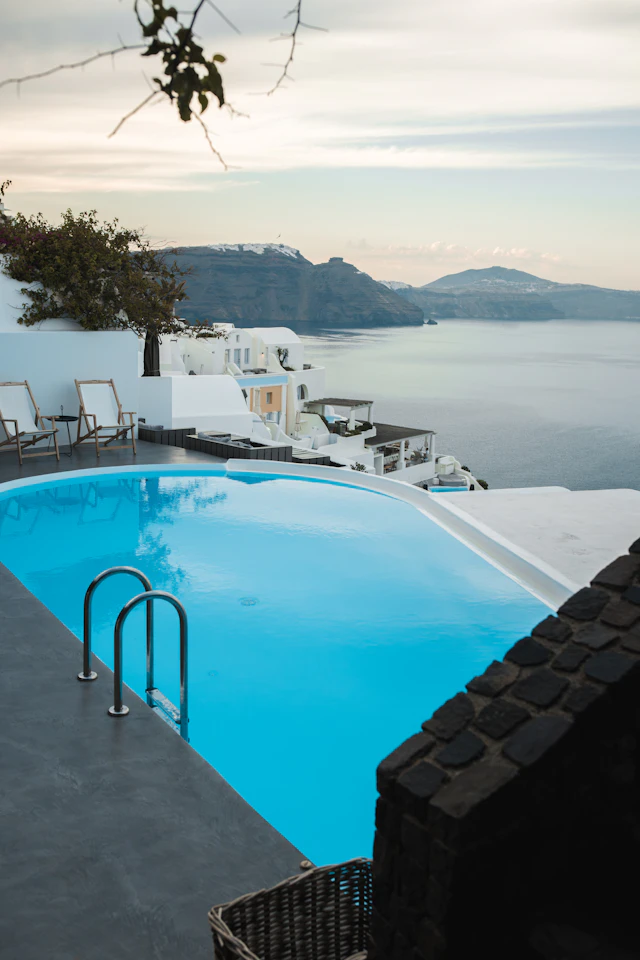
Fotografia
Horizonte mediterrâneo
Piscina de borda infinita diante do mar e da arquitetura branca de Santorini.
Um refúgio cinco estrelas à beira-mar
Aurelia / Olhares sobre o Mediterrâneo
As fotografias dão forma ao nosso destino imaginário. Aqui, preservamos suas fontes e informações de uso.
Imagens obtidas no Unsplash, conforme a licença Unsplash. Cada fotografia mantém abaixo um link para sua página original e autoria.
As imagens são ilustrativas e retratam locais reais, sem associação ou endosso ao resort fictício AURELIA. Arquivos locais em WebP foram redimensionados para a apresentação no site.

Fotografia
Piscina de borda infinita diante do mar e da arquitetura branca de Santorini.
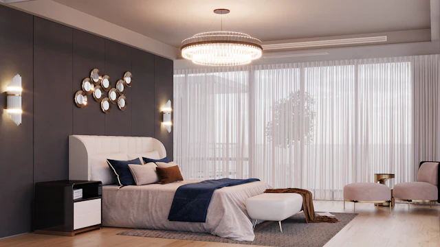
Fotografia
Quarto elegante com cama ampla, tecidos claros e iluminação natural.
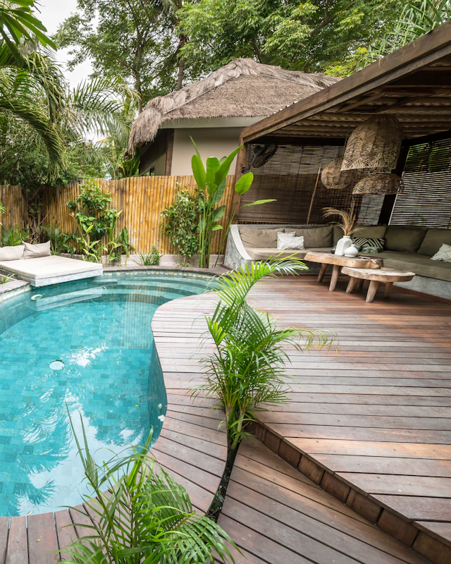
Fotografia
Acomodação de luxo com piscina privativa, terraço e área de estar ao ar livre.
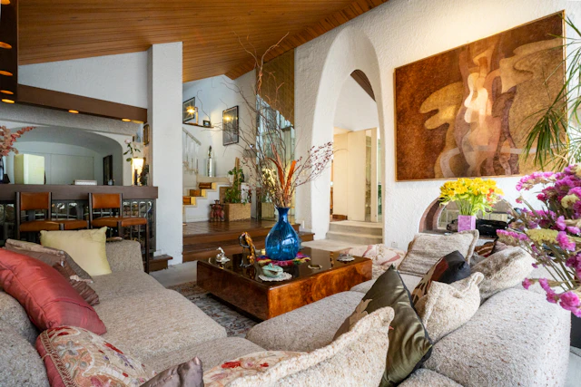
Fotografia
Sala ampla de inspiração mediterrânea com sofás em tons naturais.
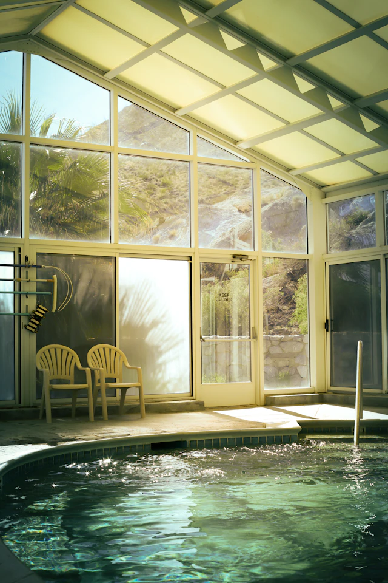
Fotografia
Piscina interna de spa com grandes janelas voltadas para a paisagem.
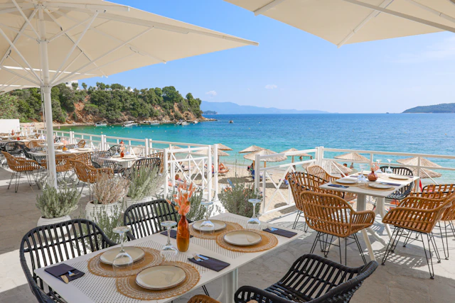
Fotografia
Mesas ao ar livre em um restaurante diante do mar na Grécia.
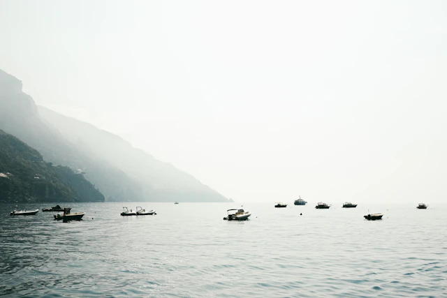
Fotografia
Veleiros junto ao litoral de Positano, na Itália.
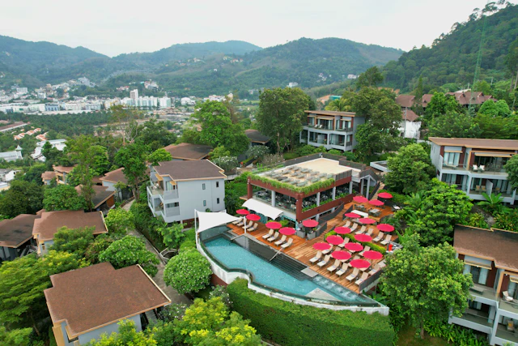
Fotografia
Piscina e espreguiçadeiras integradas à arquitetura de um resort.
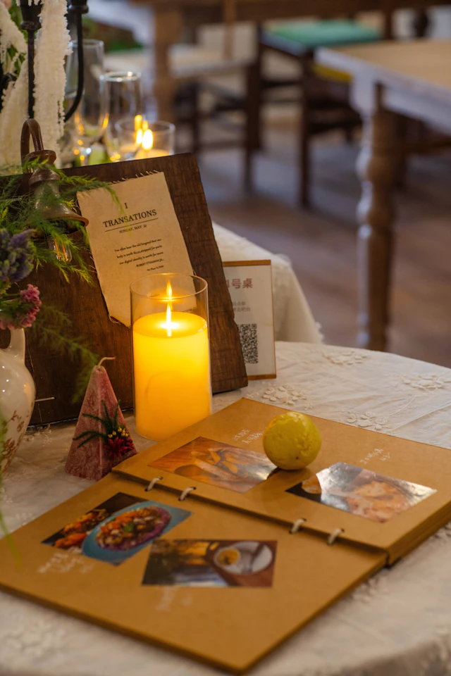
Fotografia
Mesa preparada para um jantar intimista, com vela acesa e detalhes de limão.
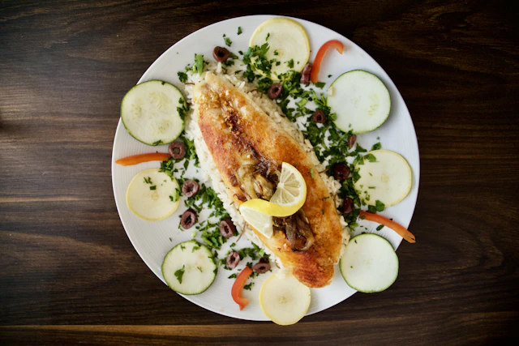
Fotografia
Prato mediterrâneo de salmão com arroz, vegetais e limão.
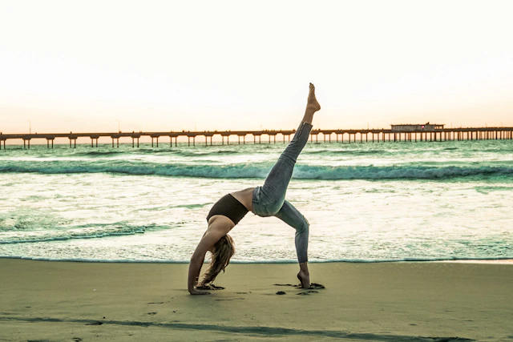
Fotografia
Prática de yoga e alongamento junto ao mar.